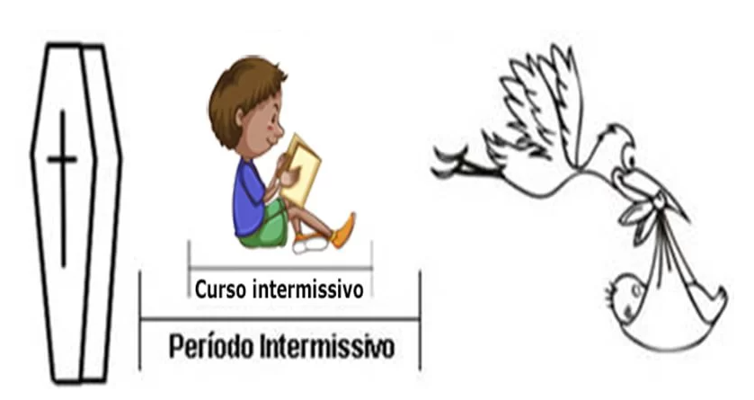

Invéxis e recéxis são duas técnicas evolutivas da Conscienciologia que propõem otimizar a evolução das conscins interessadas. A Invéxis é a Inversão Existencial, enquanto a Recéxis é a Reciclagem Existencial.
Invéxis (Inversão Existencial) é a técnica evolutiva de otimização máxima da vida intrafísica, com base na Conscienciologia, aplicada desde a juventude, gerando a antecipação da holomaturidade consciencial, por meio de escolhas assertivas e profiláticas, objetivando o cumprimento precoce da programação existencial e consequente aceleração do processo evolutivo consciencial.
Um dos principais resultados da aplicação eficaz da Invéxis é a antecipação da consecução da Programação Existencial (Proéxis) para antes dos 36 anos de idade biológica (período natural de maior maturidade psicológica e estabilidade econômica).
Aplicando a Invéxis é possível iniciar ainda na juventude as tarefas assistenciais, reciclagens intraconscienciais, buscas de autoconhecimento e desenvolvimento parapsíquico hígido, fundamentado no trabalho cosmoético com as energias, o qual tem por base o uso do EV.
A unidade de medida da invéxis é a Precocidade*.
*O que é precocidade?
Precocidade é a característica ou qualidade do que é precoce, referindo-se a tudo que se desenvolve, amadurece ou ocorre antes do tempo esperado, comum ou natural. Indica um desenvolvimento acelerado, seja físico, intelectual ou biológico, muitas vezes descrito como prematuro.
Inversão Existencial ou invéxis é a técnica de planejamento máximo da vida humana, fundamentada na Conscienciologia, aplicada desde a juventude, objetivando o cumprimento da programação existencial, o exercício precoce da assistência e a evolução.
Este planejamento técnico é realizado sem influências de dogmas, religião, misticismo, doutrinas sectárias, ideologias político-partidárias ou quaisquer compromissos escravizantes, tolhedores da liberdade da ideias e expressão.
A aplicação da técnica se inicia até aos 26 anos de idade, antes da maturidade biológica, quando o jovem ainda está delienando a própria vida, descomprometido de amarras sociais e ainda com maior flexibilidade para promover renovações íntimas.
A invéxis parte do princípio de que a pessoa não precisa até a meia-idade, período de maior maturidade psicológica e estabilidade econômica, para conhecer a si mesma, avaliar as prioridades evolutivas, suas realizações pessoais e promover a assistêncialidade além do círculo familiar e de amigos.
A invéxis não é meta evolutiva em si, mas um meio, recurso ou estratégia para se alcançar com maior eficiência o êxito na programação existencial.
A técnica também engloba o entendimento e a vivência homeostática da multidimensionalidade, a interação lúcida e a assistência às consciencias extrafísicas (consciexes, espíritos, indivíduos que já passaram pela morte biológica). Neste contexto importa ao inversor existencial ter razoável desenvoltura quanto às bioenergias e ao parapsiquismo, principalmente quanto ao domínio do estado vibracional.
Canais da Assinvéxis:
Site institucional: assinvexis.org
Canal oficial da Assinvéxis no YouTube:
youtube.com/@ASSINVEXIS
Canal oficial do Podcast Inteligência Evolutiva no YouTube:
youtube.com/@inteligencia_evolutiva
No canal do YouTube Inteligência Evolutiva, são discutidos temas variados sobre o parapsiquismo, planejamento de vida, maturidade precoce, entre outros — tudo sob a ótica da Inversão Existencial.
Recéxis (Reciclagem Existencial) é a técnica evolutiva de reorganização e realinhamento completo do curso e perspectiva da vida humana da conscin, fundamentada na Conscienciologia, aplicada, geralmente, após a juventude, objetivando o melhor aproveitamento do tempo de vida ainda disponível, em prol do cumprimento satisfatório da proéxis pessoal.
A técnica da reciclagem existencial ou recéxis objetiva a renovação,a autocorreção e a mudança para melhor do rumo da vida, fundamentada na Conscienciologia (VIEIRA, 1994, p. 682).
Este recurso evolutivo é adequado para a conscin que anseia reciclar a existência e começar a priorizar a proéxis já na adultidade, ou ainda adolescente, mas possui algum impedimento quanto à invéxis. Recéxis não é um "prêmio de consolação" para quem não é inversor; é uma técnica que exije dedicação, despojamento para renovações, um reconhecimento de que as escolhas que fez e a trajetória realizada até o momento precisam ser mudadas.
PÁGINA AINDA EM PRODUÇÃO.
Duis condimentum libero et arcu laoreet, id placerat est vulputate. Duis commodo mi quis nisl volutpat pretium. Nulla sodales vitae tellus id posuere. Orci varius natoque penatibus et magnis dis parturient montes, nascetur ridiculus mus. Curabitur elementum efficitur facilisis. Praesent eu blandit felis.
Umas das metas em comum entre inversores e reciclantes é a produção de gescons, fundamentais em quaisquer proéxis.

Intermissão (Intervalo das encarnações) / Erraticidade
O período extrafísico da consciência entre duas vidas humanas denomina-se intermissão. Este intervalo é vivenciado nas dimensões extrafísicas, com maior ou menor lucidez e aproveitamento evolutivo. A duração da intermissão varia em cada caso.
Curso intermissivo é o conjunto de matérias e aulas ministradas no intervalo entre vidas, no qual conciexes predispostas e com ficha holobiográfica favorável atuam enquanto alunas na preparação da ressoma (nova vida humana) e da proéxis. O objetivo é capacitar as consciexes (consciências extrafísicas) para tarefas interassistenciais em sua próxima vida, sendo habilitadas a executar trabalhos específicos de caráter pessoal (renovação íntima) e coletivo.
A capacitação ocorre principalmente pela autopesquisa profunda a partir da visão panorâmica de experiências pretéritas (vidas passadas), possibilitando a organização da próxima vida.
Este conjunto de tarefas especializadas ou missão de vida (expressão popular) denomina-se Programação Existencial (Proéxis). Trata-se de atribuições assumidas pela própria consciência, sempre assistênciais, supervisionadas por um evoluciólogo.
De acordo com Vieira (1998), exitem dois tipos básicos de proéxis:
a. Miniproéxis. São tarefas simples, varejistas, com predominância na caridade e na tarefa da consolação (tacon). Muitas vezes têm forte apelo religioso, emocional, mais assistencialistas do que assistenciais. Restringe-se ao ego e grupocarma.
b. Maxiproéxis. São tarefas complexas, atacadistas, grupais, policármicas, com predomínio na racionalidade e na tarefa do esclarecimento (tares); incentivam o senso crítico, a autonomia intelectual, emocional, psicológica e energética; são assistenciais com eficiência e universalismo.
O cumprimento integral da proéxis é o completismo existencial (compléxis). A consciência materializa, na dimensão intrafísica, os compromissos assumidos no curso intermissivo, consigo mesma e com outras. Nem todo completista existencial da maxiproéxis é inversor ou inversora, mas invéxis pressupõe maxiproéxis. A maxiproéxis envolve o esclarecimento a maior número de pessoas quanto à multidimensionalidade e aos cursos intermissivos, atuando como agente retrocognitor inato.
Produção de livros, docência, liderança em empreendimentos úteis, dupla evolutiva, tenepes, são exemplos de prioridades na maxiproéxis, dinamizadores da auto e heteroevolução. Este gênero de proéxis envolve maior responsabilidade por parte da conscin, pois o trabalho vincula-se necessariamente às reciclagens intraconscienciais, ou mudanças íntimas, pró-evolutivas em grupo.
Uma vida humana, durando em média 70 anos, pode ser dividida em duas fases, em relação à proéxis:
a. Fase Preparatória: até os 35 anos de idade. É o período voltado à preparação pessoal, escolaridade e aquisição de experiências indispensáveis ao amadurecimento consciencial.
b. Fase Executiva: dos 35 anos de idade até a dessoma. Período em que a base da vida já deve estar assentada. O maxiplanejamento desde a juventude favorece a maior disponibilidade à proéxis nesta fase. A invéxis visa à antecipação da fase executiva com maior produtividade. A antecipação da fase executiva não é ansiedade nem precipitação. O jovem já faz assistência com os recursos pessoais disponíveis, sem alijar-se das obrigações cotidianas e indispensáveis.
A invéxis é a técnica de otimização máxima para se alcançar o compléxis. Ao contrário, na sociedade busca-se prolongar a adolescência, retardando a fase adulta e consequantemente a fase executiva da proéxis. A geração canguru (filhos com mais de 30 anos morando na casa dos pais) é um exemplo de como o jovem é estimulado a permanecer infantil, egoísta e hedonista e com valores de vida superficiais.